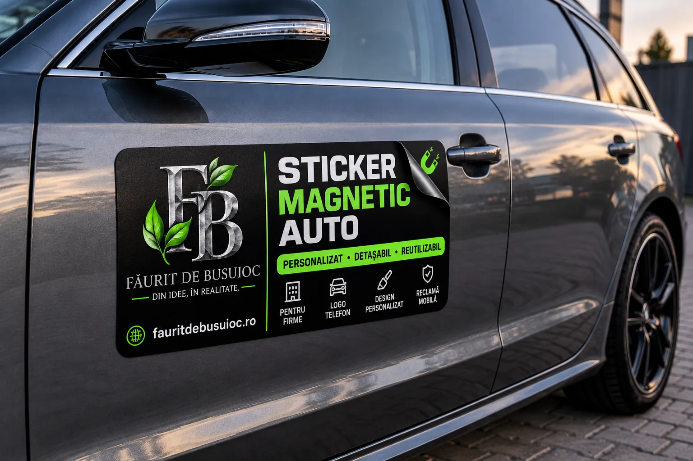

Stickere capotă
Design adaptat formelor și dimensiunilor mașinii.
Personalizare auto cu design atent lucrat: stickere pentru capotă și portiere, branding pentru firme, lunetă, grafică sportivă și stickere magnetice.

Design curat și adaptat fiecărei mașini, de la detalii discrete până la branding vizibil pentru firmă.
Design adaptat formelor și dimensiunilor mașinii.
Logo, grafică și texte pentru una sau mai multe portiere.
Logo, site și identitate vizuală pentru mașini comerciale și dube.
Grafică și texte pregătite pentru zonele vitrate.
Linii și accente pentru un aspect mai agresiv sau decorativ.
Personalizate, detașabile și reutilizabile pentru reclamă mobilă.

Personalizăm magnetul cu logo, site, telefon sau mesajul dorit, pentru firme și profesioniști care vor branding detașabil.
Trimiți fotografii clare și dimensiunile zonei dorite.
Construim conceptul și îl adaptăm mașinii.
Vezi proiectul înainte de realizarea finală.
După aprobare, designul este pregătit la dimensiunile stabilite.
Logo-uri, portiere, dube, platforme și lunete personalizate pentru vizibilitate pe drum. Apasă pe orice fotografie pentru a o vedea mărită.
Spune ce vrei să personalizezi și ce stil îți place. Discutăm detaliile direct pe WhatsApp.